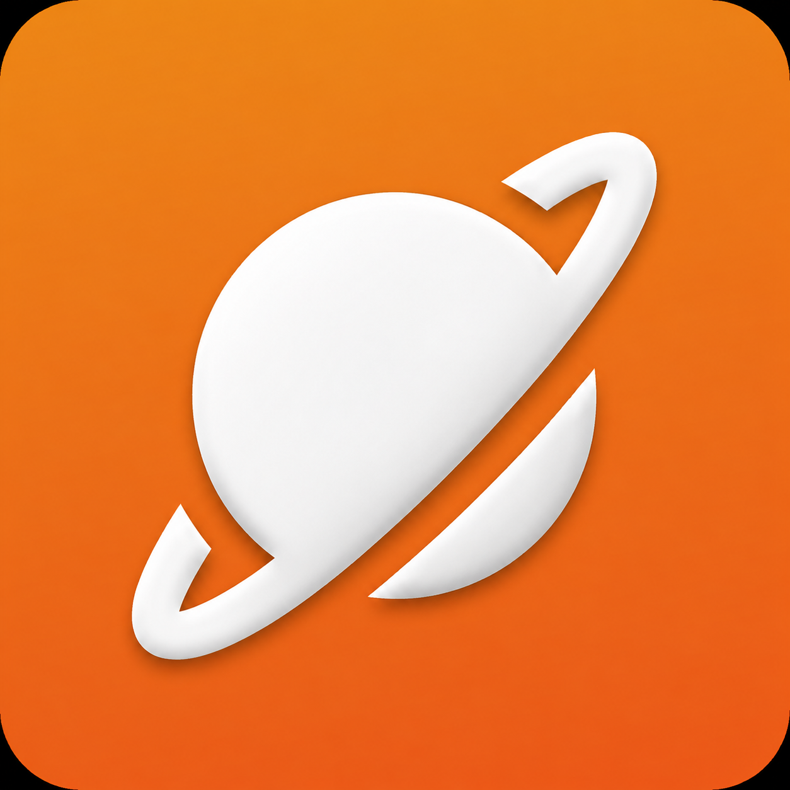
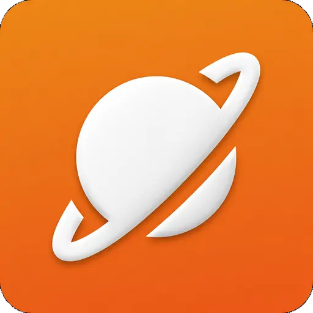
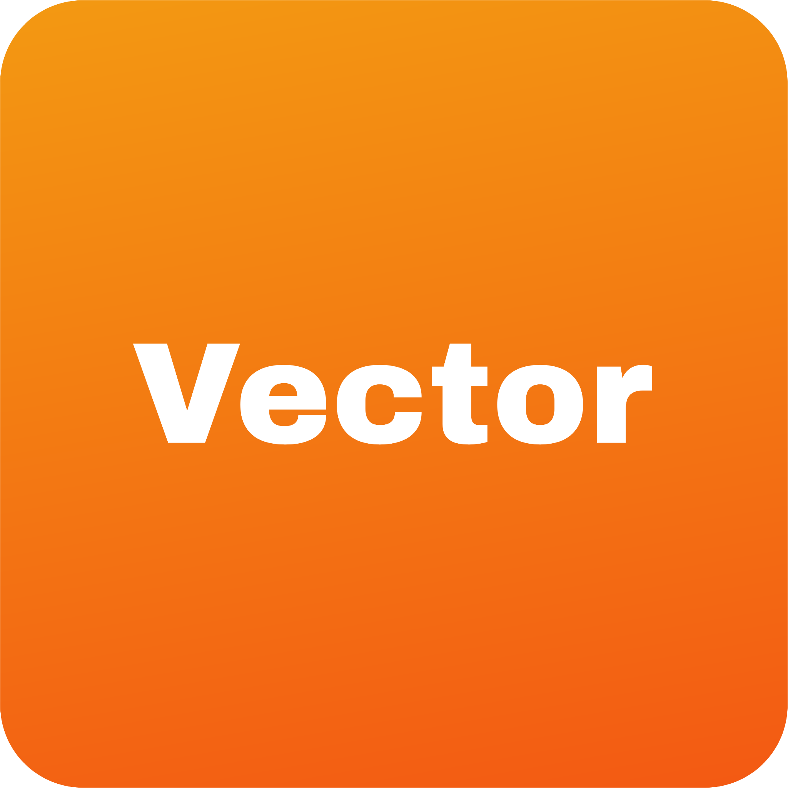
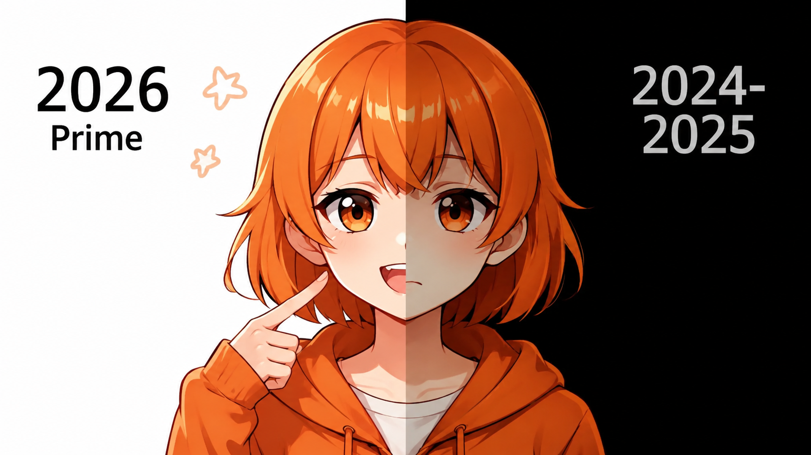
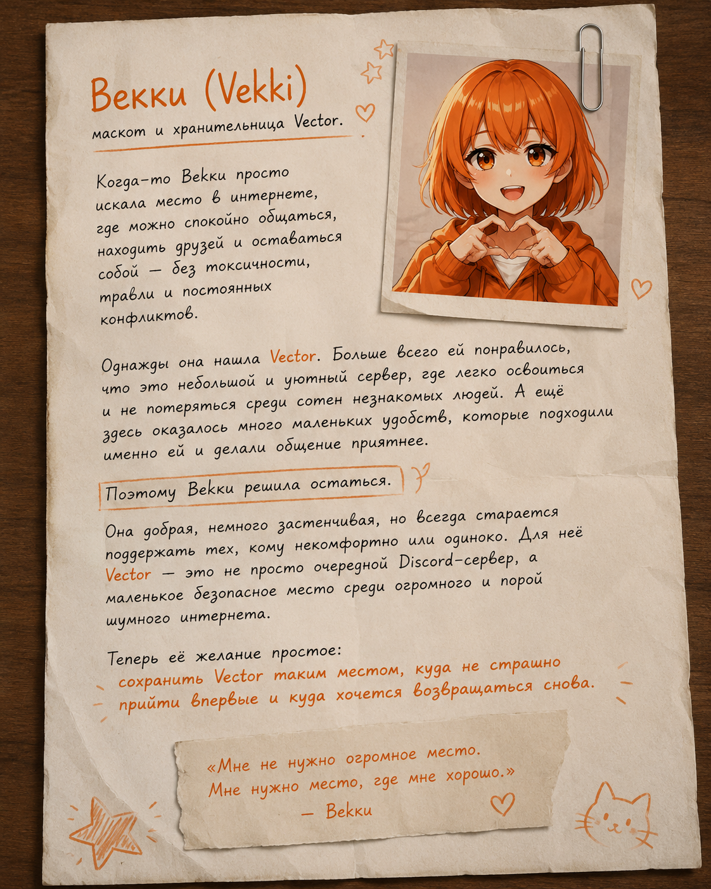

Актуальная иконка Vector
Основная иконка мессенджера Vector в фирменных оранжевом и белом цветах.
Скачать PNG
Vector Вернуться на сайтОфициальная медиатека
Логотипы, иконки и изображения Векки — официального маскота проекта Vector. Оригиналы доступны для просмотра и скачивания.

Основная иконка мессенджера Vector в фирменных оранжевом и белом цветах.
Скачать PNG
Иконка Векки, придуманной создателем Vector. Подходит для аватарки Discord.
Скачать PNG

Стандартная иконка, которая по умолчанию используется в приложении Vector — форке Telegram для Android.
Скачать JPG